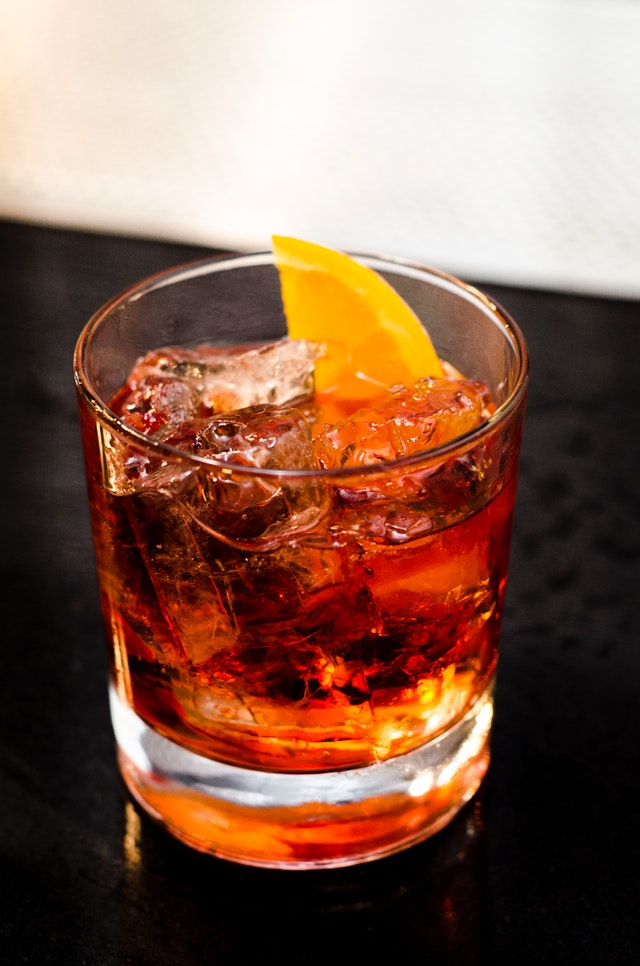

Weather App
A weather app made using geolocation and a weather API to find your latitude and longitudine coordinates to track the weather near you.


Cocktail App
This is a cocktail app that allows you to either search drinks to find ingredients to make such drink or search an ingredient to find what drinks can be made with it.